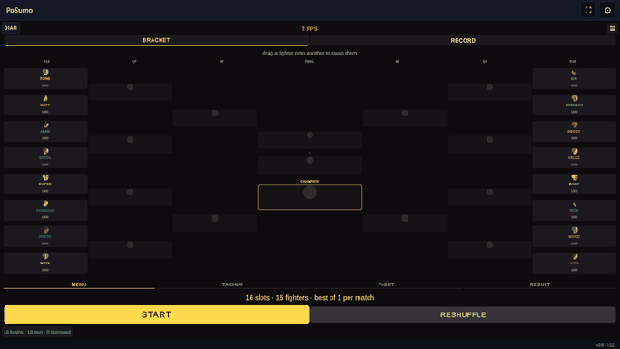
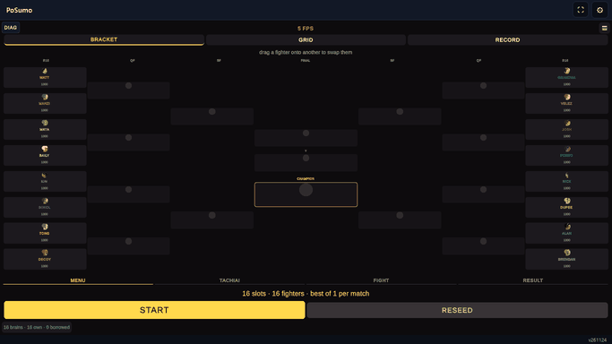
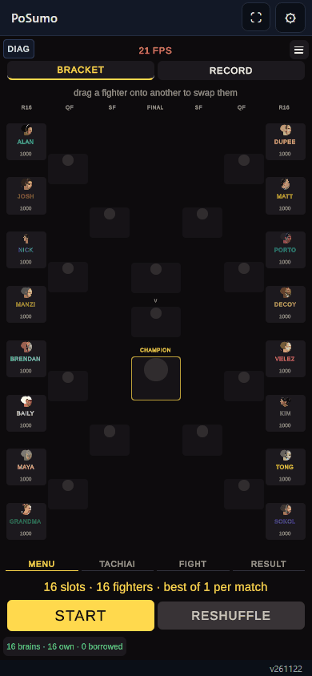
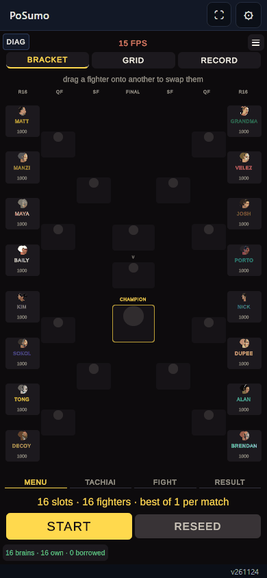
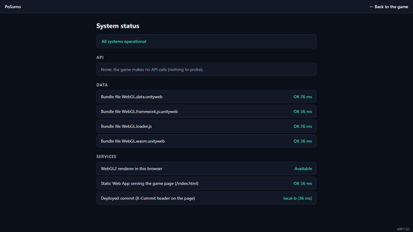
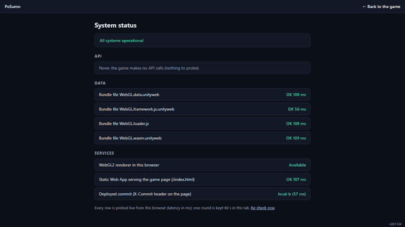
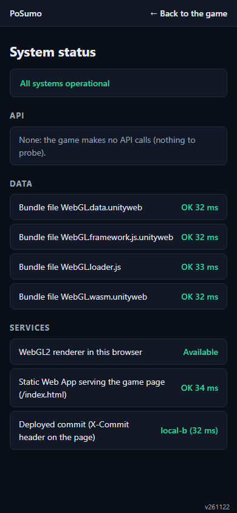
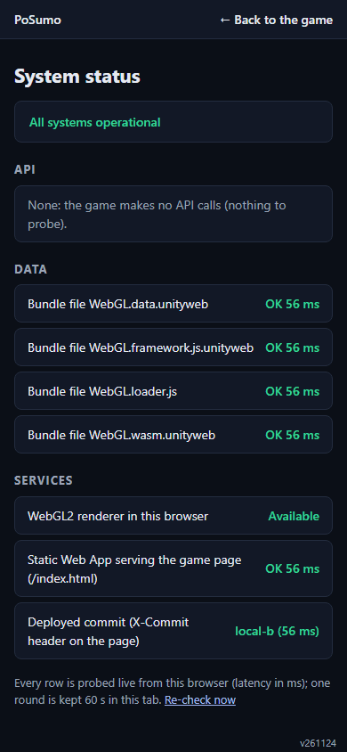

PoSumo: v4-audit
Before: local WebGL build C:\Users\punko\AppData\Local\Temp\claude\df9198ece095fa43\974cdfaf-40cd-4f20-8d61-d0effe920ead\scratchpad\v4\evidence\PoSumo\before-build. After: the local WebGL build (Builds/WebGL), captured 2026-11-24 00:41 at 1366x768 and 390x844 by scripts/screenshots.py. Every pair in one annotated image: v4-audit.png.

v4 audit (before = v261122 build of 0fdf460, the last release before the v4 work; after = v261124 working tree). Page: the name is now the <h1>, the game sits in <main>, pinch zoom is allowed (no visible change). /diag: one probe round is cached 60 s per tab and build, with a 'Re-check now' (?fresh) link and a note under Services; in-flow footer, nothing overlaps at 390. Game frames differ because the bouts are live.
game 1366x768
Changed area (red box on the sheet): x 6-677, y 8-382.


game 390x844
Changed area (red box on the sheet): x 11-378, y 15-839.


diag 1366x768
Changed area (red box on the sheet): x 24-677, y 9-381.


diag 390x844
Changed area (red box on the sheet): x 17-378, y 18-838.

